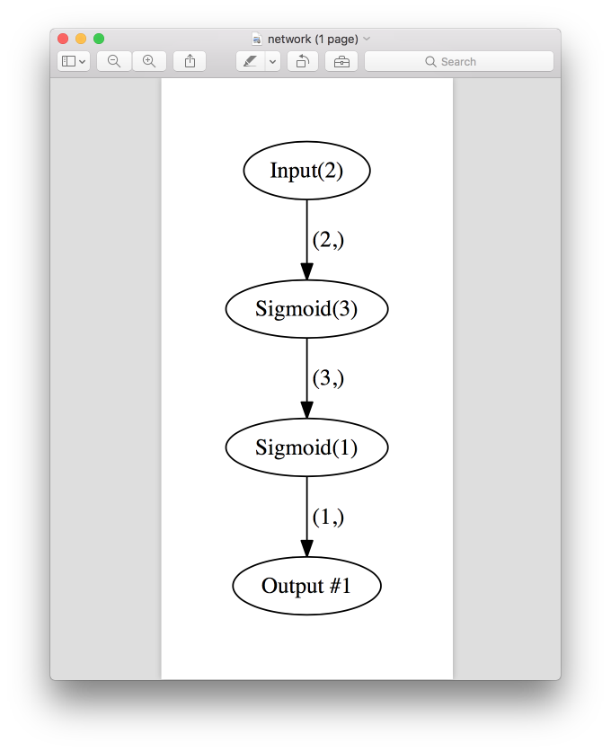

Debug layer connections
Explore connection shapes
The simplest way to debug network is just to explore input and output shapes.
>>> from neupy import layers
>>> connection = layers.Input(10) > layers.Relu(5) > layers.Softmax(3)
>>> connection
Input(10) > Relu(5) > Softmax(3)
>>>
>>> connection.input_shape
(10,)
>>> connection.output_shape
(3,)
Also, it’s possible to iterate through layers and check shapes per each layer separately.
>>> for layer in connection:
... print(layer)
... print("Input shape: {}".format(layer.input_shape))
... print("Output shape: {}".format(layer.output_shape))
... print()
...
Input(10)
Input shape: (10,)
Output shape: (10,)
Relu(5)
Input shape: (10,)
Output shape: (5,)
Softmax(3)
Input shape: (5,)
Output shape: (3,)
The more complex connection that is not suitable for sequential iteration will be topologically sorted at first and then presented one by one during the iteration.
Visualize connections
For the debugging, it’s useful to explore network architecture. It’s possible to create visualize layer graph in NeuPy. Let’s say we have this network.
from neupy import layers
network = layers.join(
layers.Input((3, 10, 10)),
[[
layers.Convolution((32, 3, 3)),
layers.Relu(),
layers.MaxPooling((2, 2)),
], [
layers.Convolution((16, 7, 7)),
layers.Relu(),
]],
layers.Concatenate()
layers.Reshape(),
layers.Softmax(10),
)
To be able to visualize it we can just use layer_structure function.
from neupy import plots
plots.layer_structure(network)

This function will pop-up PDF file with a graph that defines all layers and relations between them. In addition, it shows input and output shape per each layer.
Instead of showing pop-up preview we can simply save it in the separate file.
from neupy import plots
plots.layer_structure(connection, filepath='connection.pdf',
show=False)
The function also works for the training algorithms with constructible architectures. Basically, it automatically extracts architecture from the algorithm and visualizes it.
from neupy import algorithms, plots
nnet = algorithms.GradientDescent((2, 3, 1))
plots.layer_structure(nnet)

{kind=link}
Count number of parameters
>>> from neupy import layers
>>>
>>> connection = layers.join(
... layers.Input(10),
... layers.Relu(5), # weight: 10 * 5, bias: 5, total: 55
... layers.Relu(2), # weight: 5 * 2, bias: 2, total: 12
... )
>>> layers.count_parameters(connection)
67
Iterate through all network parameters
>>> from neupy.layers.utils import iter_parameters
>>>
>>> network = layers.join(
... layers.Input(1),
... layers.Sigmoid(2),
... layers.Sigmoid(3),
... )
>>>
>>> print(network)
Input(1) > Sigmoid(2) > Sigmoid(3)
>>>
>>> for layer, attrname, parameter in iter_parameters(network):
... # parameter is shared Theano variable
... parameter_value = parameter.get_value()
... print("Layer: {}".format(layer))
... print("Parameter name: {}".format(attrname))
... print("Parameter shape: {}".format(parameter_value.shape))
... print()
...
Layer: Sigmoid(2)
Parameter name: weight
Parameter shape: (1, 2)
Layer: Sigmoid(2)
Parameter name: bias
Parameter shape: (2,)
Layer: Sigmoid(3)
Parameter name: weight
Parameter shape: (2, 3)
Layer: Sigmoid(3)
Parameter name: bias
Parameter shape: (3,)
Exploring graph connections
Any relation between layers stores in the specific graph. To be able to debug connections we can check network graph to make sure that all connections defined correctly.
>>> from neupy import layers
>>>
>>> input_layer = layers.Input(10)
>>> input_layer.graph
[(Input(10), [])]
Since layer doesn’t have any relations its graph is empty. We can define new layers and create a new network.
>>> network = layers.join(
... input_layer,
... [[
... layers.Relu(10),
... layers.Relu(20),
... ], [
... layers.Relu(30),
... ]],
... layers.Concatenate()
... )
>>> network.graph
[(Input(10), [Relu(10), Relu(30)]),
(Relu(10), [Relu(20)]),
(Relu(20), [Concatenate()]),
(Relu(30), [Concatenate()]),
(Concatenate(), [])]
The graph has formatted representation in case if it was printed. But if we need to access it directly then we shold check the forward_graph attribute.
>>> network.graph.forward_graph
OrderedDict([(Input(10), [Relu(10), Relu(30)]), (Relu(10),
[Relu(20)]), (Relu(20), [Concatenate()]), (Relu(30),
[Concatenate()]), (Concatenate(), [])])
Do not try to modify graph. Modifications can break relations between layers. This feature is only available for debugging.